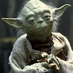
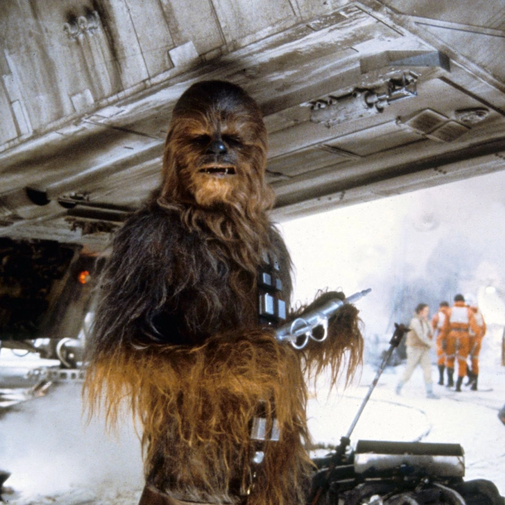
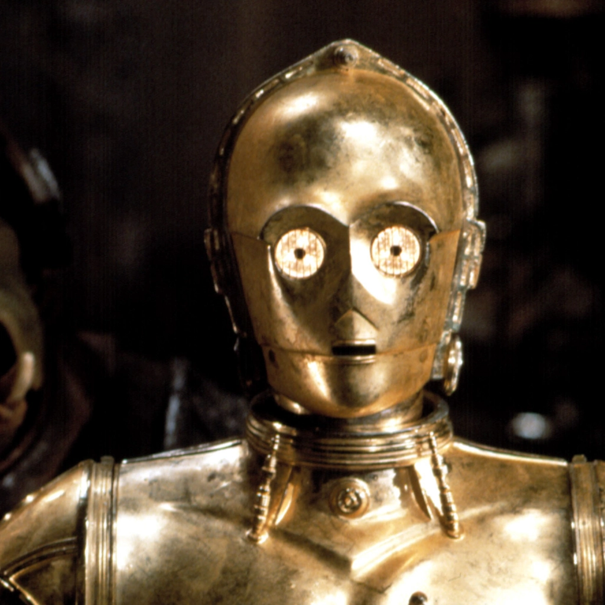
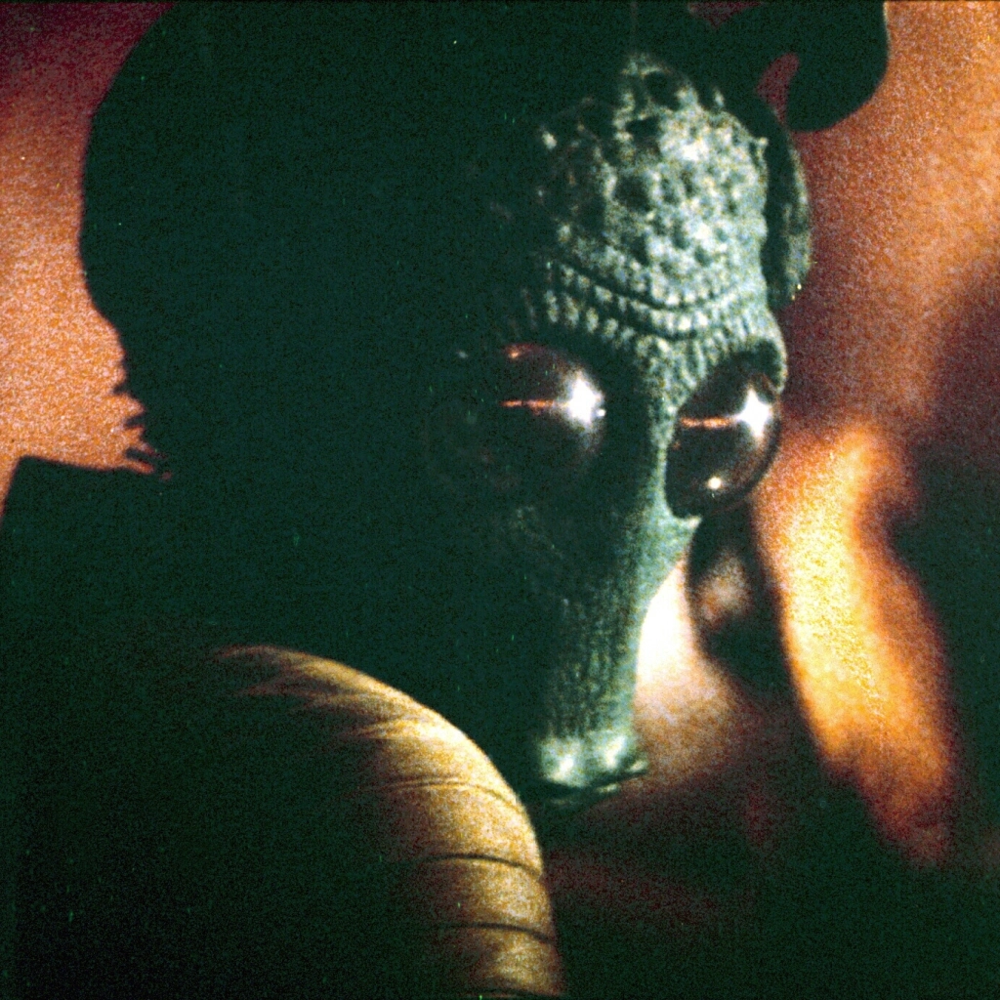

Darth Vader
Darth Vader

Created by George Lucas
First appearance Star Wars (1977)
Darth Vader is a fictional character in the Star Wars franchise. The character is the
primary
antagonist in the original trilogy and, as Anakin Skywalker, is one of the primary
protagonists
throughout the prequel trilogy. Star Wars creator George Lucas has collectively referred to
the
first
six episodic films of the franchise as "the tragedy of Darth Vader". He has become one of
the
most
iconic villains in popular culture, and has been listed among the greatest villains and
fictional
characters ever.
Originally a slave on Tatooine, Anakin Skywalker is a Jedi prophesied to bring balance to
the
Force.
He is lured to the dark side of the Force by Chancellor Sheev Palpatine / Darth Sidious and
becomes
a
Sith Lord, assuming the title of Darth Vader. After a lightsaber battle with his former
mentor
Obi-Wan
Kenobi on Mustafar, in which he is severely injured, Vader is transformed into a cyborg. He
then
serves the Galactic Empire for over two decades as its chief enforcer. Vader ultimately
redeems
himself by saving his son, Luke Skywalker, and killing Palpatine, sacrificing his own life
in
the
process.[5] He is also the secret husband of Padmé Amidala, the biological father of
Princess
Leia,
and the grandfather of Kylo Ren (Ben Solo). In the non-canonical Star Wars Legends
continuity,
he is
also the grandfather of Ben Skywalker, his eponym Anakin Solo, Jaina Solo and Darth Caedus
(Jacen
Solo), and the great-grandfather of Allana Solo.
In-universe information:
Full name-Anakin Skywalker
Alias-The Chosen One
Occupation:
Slave
Padawan
Jedi Knight
Member of the Jedi High Council
Jedi General in the Grand Army of the Republic
Dark Lord of the Sith
Supreme Commander of the Imperial Military
Affiliation:
Watto's shop
Jedi Order
Galactic Republic
Sith Order
Galactic Empire
Spouse: Padmé Amidala
Master: Obi-Wan Kenobi (as Jedi)---Darth Sidious (as Sith)
Apprentice: Ahsoka Tano
Homeworld: Tatooine
Back To Top
Anakin Skywalker
Anakin Skywalker

APPEARANCES:
Star Wars: Return of the Jedi
Star Wars: The Phantom Menace
Star Wars: Attack of the Clones
Star Wars: Revenge of the Sith
Star Wars Rebels
Star Wars: The Clone Wars
Anakin Skywalker was a legendary Force-sensitive human male who was a Jedi Knight of the
Galactic
Republic and the prophesied Chosen One of the Jedi Order, destined to bring balance to the
Force.
Also known as "Ani" during his childhood, Skywalker earned the moniker "Hero With No Fear"
from
his
accomplishments in the Clone Wars. His alter ego, Darth Vader, the Dark Lord of the Sith,
was
created when Skywalker turned to the dark side of the Force, pledging his allegiance to the
Sith
Lord Darth Sidious at the end of the Republic Era.
Anakin Skywalker was one of the most powerful Jedi and Sith in galactic history. The Force
was
especially strong in the Skywalker bloodline, which culminated in Anakin's grandson, Ben
Solo,
Organa's son who was born by the end of the Galactic Civil War in 5 ABY. Solo would turn to
the
dark
side as well, becoming the dark warrior Kylo Ren during the rise of the First Order. Like
his
grandfather, however, Solo found redemption by sacrificing his life for the love of
another—the
Jedi
apprentice Rey, who heard Skywalker's voice telling her to restore the balance, as he once
had,
during the Battle of Exegol in 35 ABY. Solo's death ended the Skywalker bloodline, although
Rey,
the
granddaughter of Sidious, rejected her true heritage and took their surname to honor their
legacy.
Anakin Skywalker/Darth Vader: Biographical information:
Born: 41 BBY, Tatooine
Died: 4 ABY, DS-2 Death Star II Mobile Battle Station, Endor system
Physical description:
Species: Human
Gender: Male
Height: 1.88 meters, later 2.03 meters (6 ft, 8 in) in armor
Mass: 120 kilograms in armor
Hair color: Blond,light and dark
Eye color: Blue, later yellow (dark side)
Skin color: Light, later pale
Cybernetics: Cybernetic right arm; later prosthetic arms and legs, and a life-support system
"Do you believe you are the Chosen One?"
"How can I know?"
"I can tell you what I believe. I believe you will bring balance to the Force. That you will
face
your demons and save the universe."
―Qui-Gon Jinn and Anakin Skywalker
Chronological and political information: Affiliation(s):
Skywalker family
Jedi Order
Jedi High Council
Galactic Republic
7th Sky Corps
302nd Battalion
501st Legion
Office of the Chancellor
Sith
Galactic Empire
Imperial High Command
Death Squadron
Vader's crew
Masters:
Qui-Gon Jinn (informal Jedi Master)
Obi-Wan Kenobi (Jedi Master)
Darth Sidious (Sith Master)
Yoda (Force spirit teacher)
Apprentices:
Ahsoka Tano (Padawan)
Inquisitorius (dark-side apprentices)
"Corvax descendant"
Signifcant Other: Padmé Amidala
Homeworld-Tatooine
Back To Top
Emperor Sheev Palpatine
Emperor Sheev Palpatine

Created by George Lucas
First appearance: The Empire Strikes Back (1980)
The one story the prequels tell particularly well doesn't really involve the corruption of
Anakin
Skywalker; rather, it's the one about how the shadowy leader of a religious cult dismantled
the
republic from within.
Senator Sheev Palpatine, a.k.a. “Darth Sidious,” only registers in the original trilogy as
“Darth
Vader's boss,” but in Phantom through Sith he's the evil no one recognizes until it's too
late.
He
starts out as a deceptively conscientious politician, who then provokes a war, convinces his
colleagues to build him a clone army, gets himself named Supreme Chancellor as an emergency
measure, and forges an Empire — all legally.
In one of the most loaded images of the whole series, Palpatine flings congressional
box-seats
at
Yoda, showing how he uses democracy as a weapon while simultaneously destroying it.
Sheev Palpatine is a fictional character in the Star Wars franchise, created by George
Lucas.
Initially credited as the Emperor in the 1980 film The Empire Strikes Back, he is also known
by
his Sith name, Darth Sidious.
The character appears in each trilogy in the nine-film Skywalker saga, in which he is
portrayed
by
Ian McDiarmid and serves as the primary antagonist.
In the original trilogy, Palpatine is depicted as Emperor of the Galactic Empire and the
master
of
Darth Vader. In the prequel trilogy, he is portrayed as a charismatic politician—and,
secretly,
a
Sith Lord —who orchestrates the Clone Wars, all but exterminates the Jedi Order, ends the
Galactic
Republic, and seduces Jedi Knight Anakin Skywalker to the dark side of the Force.
In The Rise of Skywalker (2019), the final film in the sequel trilogy, Palpatine is revealed
to
be
the mastermind behind the First Order and the creator of its former leader, Snoke, as well
as
the
grandfather of protagonist Rey.
Since the release of Return of the Jedi in 1983, Palpatine has become a widely recognized
symbol
of evil in popular culture, and since the prequel films, also one of sinister deception and
the
subversion of democracy. Aside from the films, Palpatine appears in various canon and
non-canon
Star Wars media.
Full name: Sheev Palpatine
Alias: Darth Sidious
Species: Human
Gender: Male
Occupation:
Dark Lord of the Sith
Senator from Naboo
Supreme Chancellor of the Galactic Republic
Emperor of the Galactic Empire
Mastermind of the First Order
Leader of the Sith Eternal
Apprentice:
Darth Maul
Count Dooku
Darth Vader
Kylo Ren (proxy)
Affiliation:
Sith Order
Galactic Republic
Confederacy of Independent Systems
Galactic Empire
First Order
Sith Eternal
Religion: Sith Order
Master: Darth Plaguies
Creation: Snoke
Homeworld: Naboo
Back To Top
Qui-Gon Jinn
Qui-Gon Jinn

Created by George Lucas
First Appearance: The Phantom Menace (1999)
All the scorn heaped on The Phantom Menace obscures how good Liam Neeson is as an honorable
Jedi
knight who mentors young Obi-Wan (Ewan McGregor) in the ways of the Force.
In Qui-Gon Jinn, we can see the wise-elder warrior that Kenobi would grow to become, and
Neeson
(who had yet to make the transition to avenging-angel action star) brought just the right
amount
of Zen gravitas to his ass-kicking role.
Although the prequels were about Anakin's character
arc, the first installment really belongs to this character, who's trying to maintain a
fragile
peace across the galaxy while unseen forces are conspiring to tear it apart.
That's what makes his death at the hands of Darth Maul especially tragic: It's not just
Qui-Gon
who's dying but also his era's sense of nobility.
Qui-Gon Jinn (/'kwaigɒn/) is a fictional character in the Star Wars franchise, played by
Liam
Neeson.
He is a main character in the prequel film trilogy, serving as the protagonist of The
Phantom
Menace (1999).
Within the fictional Star Wars universe, Qui-Gon mentors Obi-Wan Kenobi, and is a powerful
and
wise, yet controversial Jedi Master, who has many uncommon beliefs regarding The Force.
In-universe Information:
Species: Human
Gender: Male
Occupation: Jedi
Affiliation:
Jedi Order
Galactic Republic
Master: Count Dooku
Apprentices: Obi-Wan Kenobi
Legends: Feemor, Xanatos
Homeworld: Coruscant
Darth Sidious
Darth Sidious

Created by George Lucas
First Appearance: Star Wars: Episode II Attack of the Clones
Darth Sidious, born Sheev Palpatine and also known simply as the Emperor, was a human male
Dark Lord of the Sith and Emperor of the Galactic Empire, ruling from 19 BBY to 4 ABY.
Rising to power in the Galactic Senate as the senator of Naboo, the secretive Sith Lord
cultivated two identities, Sidious and Palpatine, using both to further his political career
and deceive his way into accomplishing his goal.
He orchestrated the fall of the Galactic Republic and the Jedi Order through the Clone Wars,
and then established his reign over the galaxy which lasted until his death at the Battle of
Endor. However, the dark side of the Force gave rise to powers which allowed the Emperor to
return from the grave.
Darth Sidious/Sheev Palpatine, Biographical Information:
Born: 84 (BBY) Before Battle of Yavin, Naboo
Died: 4 (ABY) After Battle of Yavin, Death Star II, Endor system (original body)
Died: 35 (ABY) After Battle of Yavin, Exegol (clone body)
Physical description:
Species: Human (Naboo)
Gender: Male
Height: 1.73/1.78 meters
Mass: 75 kilograms
Hair color: Red and later white
Eye color: Blue (human), then yellow (dark side), last white (deteriorated clone body)
Skin color: Light, but later pale
Cybernetics: Ommin harness
Occupations:
Dark Lord of the Sith
Senator from Naboo
Supreme Chancellor of the Galactic Republic
Emperor of the Galactic Empire
Mastermind of the First Order
Leader of the Sith Eternal
Chronological and political information Affiliation(s):
Palpatine family
Sith
Royal House of Naboo
Galactic Republic
Naboo delegation
Office of the Chancellor
Trade Federation
Confederacy of Independent Systems
Galactic Empire
Sith Eternal
First Order
Religion: Sith Order
Master: Darth Plagueis
Apprentices:
Wilhuff Tarkin (Protégé)
Count Dooku
Darth Maul (Sith)
Darth Tyranus (Sith)
Gallius Rax (Protégé)
Darth Vader (Sith)
Inquisitorius (Jedi hunters)
Kylo Ren (proxy-secretly)
Creation: Snoke (puppet)
Homeworld: Naboo
Darth Sidious's Collection Production Information:
Type: Private Sith artifact and archives collection
Culture: Sith
Owners: Darth Sidious
Locations: Galactic City, Coruscant
A dilapidated tower, The Works
Chancellor's Suite, Senate Office Building, Federal District
Sith retreat, Grand Republic Medical Facility
Imperial Palace, Palace Precinct, Physical and technical specifications
Material(s):
Great Crystal of Aantonaii
A massive Sith holocron from Moraband
Sith Holocron repository
Numerous Sith weapons
Sith Chalice
2 spirit urns
Bronzium statues of the Four Sages of Dwartii
Usage and history
Back To Top
Yoda
Yoda 
Created by George Lucas
First appearance The Empire Strikes Back (1980)
Like a lot of good mentors, Yoda doesn't make things easy on his pupils, expecting them to
figure out
things on their own rather than spoon-feeding them important life lessons. (How else to
explain a
character who refuses to speak in the traditional subject-verb order?)
Character overview:
Grand Master Yoda is among the oldest, most stoic, and most powerful Jedi Masters in the
Star Wars
universe.
George Lucas opted to have many details of the character's life history remain unknown.
Yoda's
race and home world have not been named in any official media, canonical or otherwise, and
he is merely
said to be of a "species unknown" by the Star Wars Databank.
Yoda's characteristic speech patterns were conceived by Lucas and Lawrence Kasdan, and
developed by Oz. Academic syntacticians have found them somewhat inconsistent, but have
extrapolated that they possess object-subject-verb word order, making them anastrophic.
The films and Expanded Universe reveal that Yoda had a hand in training almost every Jedi
Master in the
galaxy. In the Star Wars prequel films, he instructs several younglings in the Jedi Temple
before they
are assigned to a master. In The Empire Strikes Back he mentions that he had been training
Jedi "for 800
years", which means he must have been a Master Jedi for quite some time before that.
In-universe information:
Full name: Yoda
Species: Unknown
Gender: Male
Titles:
Jedi Master (Episodes I-VI)
Grand Master of the Jedi High Council (Episodes I-III)
General in the Grand Army of the Republic (Episodes II-III)
Occupation:
Jedi Master
Affiliation:
Jedi Order
Galactic Republic
Apprentices:
Count Dooku
Mace Windu
Obi-Wan Kenobi
Luke Skywalker
Numerous others
Lives in exile on the swamp planet of Dagobah.
Back To Top
Count Dooku/Darth Tyranus
Count Dooku

Created by George Lucas
First appearance: Attack of the Clones (2002)
Count Dooku/Darth Tyranus:
Forgive Count Dooku's dismal name; even his Sith alias, Darth Tyranus, inspires shrugs more
than fear.
But embrace Christopher Lee, who brings this master swordsman of the one-percent to life
with the technicolor gravitas of Hammer horror. Dooku's best machinations as a Separatist
leader take place off screen; Lee's Middle-Earth training means his lightsaber skills,
however, are devastating.
The Count's final battle with Anakin and Obi-Wan is among the best action sequences of the
Prequels, and his death — a vicious execution at the hands of greasy-haired Anakin — is a
key moment in the young Jedi's fall to the dark side.
Family:
Count Gora (father)
Countess Anya (mother)
Count Ramil (brother)
Jenza (sister)
Occupation:
Jedi Master (formerly)
Dark Lord of the Sith
Head of State of the Confederacy of Independent Systems
Affiliation:
Jedi Order (formerly)
Galactic Republic (formerly)
Sith Order
Confederacy of Independent Systems
House of Serenno
Alias: Darth Tyranus
Species: Human
Gender: Male
Title: Count of Serenno
Significant other: Elodore Vane (Legends)
Masters:
Yoda (Jedi Master)
Darth Sidious (Sith Master)
Apprentices:
Jedi Apprentices
Rael Averross
Qui-Gon Jinn
Komari Vosa (Legends)
Sith Apprentices
Asajj Ventress
General Grievous (lightsaber combat trainee)
Savage Opress
Quinlan Vos (briefly)
Homeworld:Serenno
Back To Top
Obi-Wan Kenobi
Obi-Wan Kenobi

Created by George Lucas
First appearance Star Wars (1977)
Obi-Wan Kenobi (/'oʊbi:ˌwa:n kə'noʊbi:/) is a fictional character in the Star Wars
franchise.
Within
the original trilogy, Obi-Wan is a Jedi Master as a supporting character and is
portrayed
by
British
actor Alec Guinness.
In the later-released prequel trilogy, a younger version of the character serves as one
of
the
two
main protagonists, alongside Anakin Skywalker, and is portrayed by Scottish actor Ewan
McGregor.
In
the original trilogy he is introduced as Ben Kenobi, an alias he uses whilst in hiding
from the
Empire.
He is a mentor to Luke Skywalker, to whom he introduces the ways of the Jedi. After
sacrificing
himself in a duel against Darth Vader, Obi-Wan guides Luke through the Force in his
fight
against
the Galactic Empire.
In the prequel trilogy, set two decades earlier, he is initially a Padawan (apprentice)
to
Jedi
Master Qui-Gon Jinn, and later mentor and friend of Luke's father Anakin, who falls to
the
dark
side
of the Force and becomes Vader. The character briefly appears in the sequel trilogy as a
disembodied
voice, speaking to protagonist Rey. He is frequently featured as a main character in
various
other
Star Wars media, including the television miniseries Obi-Wan Kenobi, in which McGregor
reprises
the
role.
Alias:
Ben Kenobi,
Old Ben
Species: Human
Gender: Male
Title:
Padawan (Episode I)
Jedi Knight (Episode II)
Jedi General (during The Clone Wars and Episode III)
Jedi Master (Episodes III-IV)
Occupation:
Jedi
Affiliation:
Jedi Order
Galactic Republic
Rebel Alliance
Signifcant Other: Satine Kryze
Master: Qui-Gon Jinn
Apprentices: Anakin Skywalker
Luke Skywalker
Homeworld: Stewjon
Back To Top
Darth Maul/Maul
Darth Maul/Maul

Created by George Lucas
First appearance The Phantom Menace (1999)
Darth Maul/Maul:
Real talk: Darth Maul was a pioneer. A man of few words, the Sith Lord with the Rorschach
ink blot of a face was the
first guy to break the mold on light-sabers, his double-bladed weapon paving the way for
Kylo Ren's cross-sword beam
in The Force Awakens. Even more importantly, he also inspired millions of Star Wars fans to
ignore the fact that the
most anticipated movie of all time was borderline unwatchable.
Refreshingly comfortable in his own skin for a series in which the villains are so often
hiding their face or cloaking
their true intentions, Darth Maul radiates pure evil through his jaundiced yellow eyeballs;
George Lucas has described
the big bad of The Phantom Menace as “a figure from one of
his darkest nightmares.” (Which kind of makes you wonder where Jar Jar Binks came from.)
In the fictional universe of Star Wars, Maul is a member of the Zabrak species hailing from
Dathomir who is abducted
by Sidious as a child and trained in the ways of the dark side of the Force.
He kills Jedi Master Qui-Gon Jinn on Naboo before being bisected by his apprentice, Obi-Wan,
and presumed dead.
Surviving thanks to his mastery of the Force, Maul replaces the lower half of his body with
cybernetics and is driven
insane over a decade of isolation until his brother, Savage Opress, finds him during the
Clone Wars.
Once his mind and body are restored by the Nightsister Mother Talzin, Maul obsessively seeks
revenge against Obi-Wan,
culminating in an alliance of various crime syndicates, a takeover of Mandalore, and the
murder of Obi-Wan's lover,
Duchess Satine Kryze.
Though he is captured by Sidious for becoming a rival, Maul escapes before the Republic is
replaced by the Galactic
Empire. He renounces his Sith title of "Darth", rebuilds his criminal organization, and
meets Ezra Bridger on the Sith
world of Malachor years later.
Maul uses Ezra to track Obi-Wan to Tatooine, where the two old rivals have a final
confrontation that ends in Maul's
death.
Family:
Savage Opress (brother)
Feral (brother)
Mother Talzin (mother)
Occupation:
Dark Lord of the Sith
Crime lord
Ruler of Mandalore
Affiliation:
Nightbrother Clan
Sith Order
Trade Federation
Death Watch
Shadow Collective
Crimson Dawn
In-universe information:
Species: Dathomirian Zabrak
Gender: Male
Legends:
Kycina (mother)
Master:
Darth Sidious
Apprentice:
Savage Opress
Dryden Vos (Teräs Käsi)
Qi'ra (Teräs Käsi)
Ezra Bridger (claimant)
Homeworld: Dathomir
Back To Top
Luke Skywalker
Luke Skywalker

Created by George Lucas
First appearance Star Wars (1977)
Luke Skywalker:
Originally a farmer on Tatooine living with his uncle and aunt, Luke becomes a pivotal
figure in the Rebel Alliance's struggle against the Galactic Empire. Even after he's
mastered The Force, he still seems like one of us.
The son of fallen Jedi Knight Anakin Skywalker (turned Sith Lord Darth Vader) and Padmé
Amidala, Luke is the twin brother of Rebellion leader Princess Leia and eventual
brother-in-law of the smuggler Han Solo.
Luke trains to be a Jedi under Jedi Masters Obi-Wan Kenobi and Yoda and rebuilds the Jedi
Order. He later trains his nephew Ben Solo and mentors Rey. Though Luke dies at the end of
The Last Jedi, he returns as a Force spirit in The Rise of Skywalker, encouraging Rey to
face her grandfather, the resurrected Emperor Palpatine. At the end of the film, the spirits
of Luke and Leia give Rey their blessing to adopt the Skywalker surname and continue their
family's legacy.
The pivotal player in a decades-old interplanetary struggle for democracy, Luke is both
compassionate and temperamental — and never sure if he's using his powers the right way.
Anyone who thinks of Star Wars as a simplistic story of good and evil needs to look more
closely at the young Skywalker, who always seems to be on the brink of turning dark, even
when he's saving the day.
Family:
Padmé Amidala (mother)
Anakin Skywalker (father)
Leia Organa (twin sister)
Owen Lars (paternal step-uncle)
Beru Lars (paternal step-aunt)
Shmi Skywalker (paternal grandmother)
Cliegg Lars (paternal step-grandfather)
Han Solo (brother-in-law)
Ben Solo (nephew)
Legends:
Jacen Solo (nephew)
Jaina Solo (niece)
Anakin Solo (nephew)
Cade Skywalker (descendant)
Luuke Skywalker (clone)
Jedi Council
Occupation:
Apprentice
Moisture Farmer
Jedi
Affiliation Canon:
Rebel Alliance
Rogue Squadron
Jedi
New Republic
New Jedi Order
Resistance
Legends:
Galactic Alliance
Jedi Council
In Universe Information:
Full name: Luke Skywalker
Nickname: Wormie
Species: Human
Gender: Male
Spouse: Mara Jade (Legends)
Significant others:
Nakari Kelen
Tula Markona
Title:
Jedi Knight
Jedi Master
Red Five
Rogue Leader
Master:
Obi-Wan Kenobi
Yoda
Apprentice:
Leia Organa
New Jedi Order students
Grogu
Ben Solo
Rey
Homeworld: Tatooine
Birthplace: Polis Massa
Back To Top
Storm Troopers
Storm Troopers

Created by George Lucas
First appearance Star Wars (1977)
Storm Trooper:
According to Star Wars lore, Imperial stormtroopers are men (and in rare cases, women) who
have been recruited (or
conscripted) at a young age to serve as expendable foot soldiers of the Empire, gradually
replacing clone troopers as
their accelerated aging forces them to retire.
These recruits are trained at Imperial Academies spread out across the galaxy where they
undergo intense conditioning
that instills fierce loyalty, strict discipline and ruthless efficiency while removing any
sense of individualism or
empathy.
As the backbone of the Imperial Army, stormtroopers are dreaded for their brutality,
carrying out atrocities in the
name of Emperor Palpatine, and their fanaticism, engaging the enemy with no regard to
casualties.
Inevitably, some use their position for personal gain against a civilian population too
terrified to resist.
However, inconsistencies in academy standards led to stormtroopers of varying combat skill
and ability.
After subduing any remaining Separatist holdouts left over from the Clone Wars,
stormtroopers primarily serve as an
internal security and peacekeeping force until the Galactic Civil War where they start to
engage the Rebel Alliance in
large-scale battles.
Unable to conscript millions of soldiers to fill its stormtrooper ranks, yet unwilling to
switch back to using rapidly
produced clone troopers, First Order stormtroopers are bred, trained and indoctrinated from
birth, raised their entire
lives for no other purpose.
First Order soldiers and crews have constantly trained for combat in war games and
simulations, making them much more
effective one-on-one than the endless waves of stormtrooper conscripts fielded by the
Galactic Empire.
First Order stormtroopers are regularly put through mental indoctrination and propaganda
programs, to make sure that
they remain fanatically loyal and never hesitate or question orders.
Being taken from their families at birth, these soldiers are not even given individual names
for themselves but merely
serial numbers, such as "FN-2187".
Occupation:
Soldiers
Affiliation:
Galactic Empire
First Order
Sith Eternal
In-universe Information:
Species: Human
Gender: Male and female
Back To Top
Princess Leia
Princess Leia

Created by George Lucas
First appearance Star Wars (1977)
Last appearance Obi-Wan Kenobi (2022)
Princess Leia:
When studio heads pay lip service to the importance of creating “proactive” female
protagonists for
their blockbusters, it shows how far Hollywood remains behind Lucas' conception of Princess
Leia from almost 40 years ago.
Luke and Han may be the central heroes of the original trilogy; it's Leia, however,
who provides its heart, which doesn't mean she isn't capable with a blaster.
The late, great Carrie Fisher turns her every line of dialogue into a mocking jab, refusing
to let the smart, spitfire character settle into simply being a Death Star
damsel-in-distress.
It's impossible to erase the fact that she and Luke kiss in the first film (and, er, the
second film), but what's great about her love story with Han in The Empire Strikes Back is
that it feels like a relationship of equals, the two strongest-willed people in the galaxy
realizing they're nuts about one another.
As for the racy slave number from Return of the Jedi that jump-started a generation of boys'
sexual awakening, just remember she managed to kill Jabba while rocking it. We miss you,
Carrie.
Family:
Anakin Skywalker/Darth Vader (biological father)
Padmé Amidala (biological mother)
Luke Skywalker (twin brother)
Bail Organa (adoptive father)
Breha Organa (adoptive mother)
Occupation:
Supreme commander of the Resistance
Imperial Senator of Alderaan
Imperial Senate Ambassador
Princess of Alderaan
Legends:
Chief of State of the New Republic
Jedi
Affiliation:
Imperial Senate
Rebel Alliance
New Republic
Resistance
Legends:
Galactic Alliance
Jedi Council
In-Universe Information:
Full name: Leia Organa
Title: Princess
Senator
General
Spouse: Han Solo
Children: Ben Solo (son)
Legends:
Jaina Solo (daughter)
Jacen Solo (son)
Anakin Solo (son)
Master: Luke Skywalker
Apprentice: Rey
Homeworld: Alderaan
Birthplace: Polis Massa
Jabba The Hutt
Jabba The Hutt

Created by George Lucas
First appearance:
Return of the Jedi (1983; mentioned in original theatrical versions of preceding films)
Six Against the Galaxy (1977; comic)
The Phantom Menace (1999)
Jabba the Hutt:
Jabba the Hutt (full name: Jabba Desilijic Tiure) is a fictional character and minor
antagonist in the Star Wars
franchise. This repulsive, slovenly space slug whose response to mortal terror is a cold,
deep laugh is, without a
doubt, the finest Star Wars portrait of the id.
Jabba's Palace, a den of sin and sadism, is a wailin' time for those lucky enough to be in
the gangster's good graces.
But its endless party is powered by a Caligula-like cycle of mania in which prized
courtesans are fed to monstrous
pit-dwelling beasts as an after-dinner entertainment; that he meets his end via the very
chains he uses for his
concubines is justice.
In the films, Jabba is a powerful crime lord on the planet Tatooine, who is of the Hutt
species. He is obese and often
exemplifies his characterizations of lust and greed by having slave alien girls in his
throne room.
He places a bounty on smuggler Han Solo, sending several bounty hunters to capture him.
Boba Fett captures Han Solo, Darth Vader freezes him, and after Boba Fett delivers him Jabba
puts Han Solo on display
in his palace.
Later, Princess Leia comes to save Han but is captured by Jabba, who turns her into a slave.
While Luke Skywalker comes to rescue them, Leia chokes Jabba to death by wrapping the chain
connected to her around
his neck.
Family Canon:
Crakka (cousin)
Ebor (uncle)
Gorga (nephew)
Graballa (nephew)
Hiro (cousin)
Mama (grandmother)
Papa (grandfather)
Ziro (uncle)
“The Twins” (cousins)
Legends:
Grubba (nephew)
Jiliac (uncle)
Pazda (uncle)
Tagta (cousin)
Zorba (father)
Occupation:
Crime lord
In-universe information:
Full name: Jabba Desilijic Tiure
Species: Hutt
Language: Huttese
Gender: Male
Children: Rotta the Hutt (son)
Homeworld: Nal Hutta
Back To Top
Padmé Amidala
Padmé Amidala

Created by George Lucas
First appearance The Phantom Menace (1999)
Padmé Amidala:
Almost unmentioned in the original trilogy, Luke and Leia's mom plays a major role in the
prequels: going
undercover as her own handmaiden in The Phantom Menace, fighting in a gladiatorial arena in
Attack of the
Clones, and trying to save her husband's soul in Revenge of the Sith.
She's right there with the boys, instead of worriedly wringing her hands back home. (Okay,
maybe there's a little of that in Sith.) And as an early supporter of Senator Palpatine's
plans, Padmé Amidala helps set in motion everything that befalls her, making her a lot like
her son: a hero whose impulse to help sometimes worsens things.
Her combat skills are explored further through the Star Wars universe. In Star Wars: Episode
II – Attack of the Clones she fights squads of battle droids with hand-to-hand combat and a
blaster. Furthermore, in the film Amidala is shown to be quite physically impressive, and
given her larger size compared to Leia uses strength more often in combat. In fact she is
able to keep up with Jedi in speed and take huge falls with minimal damage. She is an expert
markswoman; in the Star Wars: The Clone Wars episode "Assassin", she outguns bounty hunter
Aurra Sing.
Family:
Jobal Naberrie (mother)
Ruwee Naberrie (father)
Sola Naberrie (sister)
Relatives Canon:
Han Solo (son-in-law)
Ben Solo (grandson)
Shmi Skywalker (mother-in-law)
Cliegg Lars (stepfather-in-law)
Owen Lars (stepbrother-in-law)
Beru Whitesun (stepsister-in-law)
Occupation:
Queen of Naboo
Senator of Naboo
Affiliation:
Royal House of Naboo
Galactic Republic
In-Universe Information:
Full Name: Padmé Amidala Naberrie
Species: Human
Gender: Female
Spouse: Anakin Skywalker
Significant Others:
Rush Clovis (formerly)
Palo (formerly)
Children:
Luke Skywalker (son)
Leia Organa (daughter)
Homeworld: Naboo
Jango Fett
Jango Fett

Created by George Lucas
First appearance Attack of the Clones (2002)
Jango Fett:
He's “just a simple man trying to make my way in the universe,” but Jango Fett is legion —
literally.
Through extensive cloning, the bounty hunter behind the blue Mandalorian armor is the basis
not only for his
better-known “son” Boba Fett, but for each and every trooper who gives Attack of the Clones
its title.
From his knock-down drag-out brawl with Obi-Wan to their high-speed asteroid-field chase to
his decapitation by Mace
Windu's blade, he's a key part of the film's best action sequences.
Kudos to Kiwi actor Temuera Morrison, who gives the character rough-hewn gangster gravitas.
Jango is covered in a sleek armored suit that conceals his scarred face, largely based on
Boba Fett's iconic outfit
(designed by Joe Johnston) from the original trilogy.
His suit was initially planned to be white to match the concept art for Boba Fett, but this
was changed to silver and
blue, in contrast to Boba's green, red, and orange.
Jango also uniquely has thigh, shin, and spat armor, as well as a comparative lack of
accessories and trophies.
Relatives Legends:
Jaster Mereel (adoptive father)
Occupation:
Bounty Hunter
Mandalore of the True Mandalorians (formerly; Legends)
Affiliation:
Confederacy of Independent Systems
Mandalorians
In-Universe Information:
Species: Human
Gender: Male
Children:
Boba Fett (clone; adoptive son)
Omega (female clone; daughter)
Homeworld: Concord Dawn
Back To Top
Han Solo
Han Solo

Created by George Lucas
First appearance Star Wars (1977)
Han Solo:
“I love you!”
“I know.”
It's the galaxy's most notorious response to a proclamation of amore, but Han Solo is far
more than a smug swashbuckler. First appearing in the original trilogy, Han Solo and his
first mate Chewbacca are smugglers
who are hired by Ben Kenobi and Luke Skywalker to transport them to Alderaan so they can
deliver the stolen plans for the Death Star.
The scoundrel-turned Rebel leader may not be George Lucas's most unique creation, but the
Falcon's scrappy flyboy is the original trilogy's most vital asset.
Harrison Ford's classic masculinity and lopsided grin, worn with the casual flair of a man
utterly at ease in the galaxy, made him a premiere heartthrob and the lifeblood of the
franchise's holy trinity.
Although initially unwilling to join the Rebel Alliance in their fight against the Galactic
Empire, he eventually does so and in the process falls in love with Princess Leia, whom he
eventually marries, becoming
Luke's brother in-law.
Beyond the charm, the funky ship, and the “who shot first?” arguments (Han did, of course,
end of story), the Correllian smuggler's own conflicts make him the saga's most complex
character.
Starry-eyed Luke instantly embraces the Force and the urgent drama of the Rebellion. Han
takes some convincing, just as we do. In The Empire Strikes Back, still the series'
high-water mark, Solo blossoms as a
flawed hero grappling with opposing urges.
The deep-rooted survival instinct that drives his headstrong cockiness is shaken by love for
Leia and the moral imperative of the Rebellion. Han's intuition, skill, and passion fly us
through the trilogy's twists like the Falcon threading the needle of an asteroid field. Just
don't ever tell him the odds.
In the sequel trilogy set decades later, Solo joins forces with scavenger Rey and former
stormtrooper Finn to help them and the Resistance in their fight against the First Order,
whose forces are led by Supreme Leader Snoke and Kylo Ren, the latter of whom is his and
Leia's son, Ben Solo who fell to the dark side of the force, which caused him and Leia to
separate.
Han is killed by his son but eventually returns as a Force vision to his son and helps
redeem him back to the light side of the force.
Alias:
Captain Solo
Cadet 124-239
Occupation:
Conscript in the Imperial Forces
Captain of the Millennium Falcon
General in the Rebel Alliance
Smuggler
Affiliation:
Galactic Empire,
Rebel Alliance,
New Republic,
Resistance
Legends:
Galactic Alliance (in Legends)
Relatives:
Luke Skywalker (brother-in-law)
Owen Lars (step uncle-in-law)
Beru Whitesun (step aunt-in-law)
Anakin Skywalker (father-in-law)
Padmé Amidala (mother-in-law)
Shmi Skywalker (grandmother in-law)
Cliegg Lars (step grandfather-in-law)
In-Universe Information:
Gender: Male
Nationality: Corellian
Spouse: Leia Organa
Sana Starros (Stennessian scam)
Significant Other: Qi'ra (formerly)
Children: Current canon:
Ben Solo / Kylo Ren (son)
Title:
Cadet (Imperial Navy)
Trooper (Imperial Army)
Captain (civilian smuggler)
General (Rebel Alliance)
Homeworld: Corellia
General Grievous
General Grievous

Created by George Lucas
First appearance Clone Wars- "Chapter 20" (2004)
General Grievous:
His name sounds like a Victorian medical condition, but this evil cyborg one of the more
complex villains in Revenge
of the Sith. Though mostly robotic, there's just enough failing organic matter in this bad
guy to keep him hunched
over and hacking. But when it's time to face-off against Obi-Wan he shakes off his cloak to
reveal an extra set of
arms and a knack for wielding lightsabers. (And spinning them like brightly-lit windmills.)
Unable to best him using laser swords, Kenobi tears open Grievous' chest to fire blasters at
his shriveled internal
organs until fire spews from his eyes.
Grievous' cyborg body was specifically designed to rival the abilities of the Jedi. Standing
at 7 ft 1 in (216 cm),
his imposing presence serves to instill fear in his opponents to give him a psychological
advantage in battle.
While he is not Force-sensitive, Grievous has been trained in all forms of lightsaber combat
by Count Dooku. Each of
his mechanical arms can separate in half, allowing him to wield four lightsabers at once to
overwhelm his enemies. His
cybernetic enhancements give him exceptional strength, speed and reflexes to outmaneuver
Force-users and even the
Force itself.
In spite of Grievous' physical and acrobatic prowess, Dooku has advised him to retreat
should he lose the elements of
surprise and intimidation, and thus his advantage, in a fight against the Force-sensitive
Jedi. Grievous often heeds
his mentor's advice and becomes known as one of the Jedi's most elusive adversaries during
the Clone Wars.
Occupation:
Warlord
Supreme Martial Commander of the Separatist Droid Armies
Jedi hunter
Affiliation:
Confederacy of Independent Systems
In-Universe Information:
Full name: Qymaen jai Sheelal
Species: Kaleesh cyborg
Gender: Male
Master: Count Dooku (lightsaber combat)
Apprentice: IG-100 MagnaGuards (melee combat)
Homeworld: Kalee
Back To Top
Chewbacca (Wookie)
Chewbacca (Wookie) 
Created by George Lucas
First appearance Star Wars (1977)
Chewbacca:
The quintessential loyal buddy and irascible sidekick, Chewbacca is the Wookie you want next
to you in the foxhole — or, more likely, as your copilot in the Millennium Falcon. The fact
that no one in the audience knew what Chewie was ever saying was part of the character's
appeal.
Chewbacca speaks only in his native language, Shyriiwook (which sounds like animal sound
growls); he is able to understand English, but is physically unable to speak it.
Everybody in the Star Wars universe understood his moans and growls, which helped make the
movies seem exotic, multicultural and inclusive in a deeply comforting way. Of course, the
irony was that the franchise's tallest, most fearsome wild animal was, in actuality, the
biggest softie at heart.
It's his anguished cry when Han Solo gets put into carbonite that makes that indelible
sequence from The Empire Strikes Back so gut-wrenching: He's losing his best friend, and you
feel his pain.
Chewbacca, a 200-year-old wookiee, becomes a young Han Solo's companion after they both
escape Imperial captivity on Mimban. After a series of adventures on Vandor and Kessel,
Chewbacca embarks on the smuggling trade, serving as Han's co-pilot on the Millennium Falcon
for the rest of Han's life.
Standing 8 feet (2.4 m) tall, Chewbacca is covered with long hair and wears only a
bandolier. His weapon of choice is the Wookiee bowcaster (a crossbow-shaped directed-energy
weapon).
Chewbacca was named one of the "greatest sidekicks" in film history by Entertainment Weekly.
Family:
Attichitcuk (Itchy) (father)
Unnamed mother
Relatives Legends:
Kallabow (sister)
Lowbacca (nephew)
Sirrakuk (niece)
Occupation:
Co-pilot and first mate on Millennium Falcon
Affiliation:
Galactic Republic
Rebel Alliance
New Republic
Resistance
In-Universe Information:
Species: Wookiee
Gender: Male
Spouse: Mallatobuck (Malla)
Children:
Lumpawarrump (Lumpy)/
Lumpawaroo (Waroo) (son)
Homeworld: Kashyyyk
Bib Fortuna
Bib Fortuna

Created by George Lucas
First appearance Return of the Jedi (1983)
Last appearance "Chapter 4: The Gathering Storm" (2022) (The Book of Boba Fett)
Bib Fortuna:
Bib Fortuna is a member of the Twi'lek species, humanoids distinguished by the pair of long
tentacular appendages that
protrude from the back of their heads, which are known as lekku. Fortuna's dialogue in the
film is delivered in
Huttese, the fictional language also spoken by Jabba.
Fortuna works as the majordomo and chief aide for Jabba the Hutt, a slug-like alien and one
of the most powerful crime
lords in the galaxy. In this capacity, Fortuna controls most operations within Jabba's
palace on the desert planet of
Tatooine. Among these duties are welcoming visitors who come to the palace, and vetting them
before they appear before
Jabba.
Jabba the Hutt's right-hand man may have been no match for Jedi mind tricks, but when the
Rebels weren't setting up a
complex prison break for Han Solo, the sniveling Twi'lek did an ace job of keeping the
debauchery and illegality of
the Palace running smoothly.
He had the good fortune to have his lekku (or “brain-tail”) dip nder his chin like a bib, a
wonderful coincidence
considering his given name. And being the obsequious slime that he was, he somehow survived
the battle on Jabba's
skiff near the Great Pit of Carcoon.
Fortuna is the first Twi'lek character to appear in Star Wars, although the species did not
receive a name until the
publication of the Star Wars Sourcebook, a 1987 sourcebook for Star Wars: The Roleplaying
Game. With pale,
mucus-covered skin and sharp, snaggly teeth, Fortuna is originally from the planet Ryloth,
the Twi'lek homeworld.
Occupation:
Daimyo
Majordomo
Chief aide to Jabba the Hutt
Affiliation:
Jabba the Hutt
In-Universe Information:
Species: Twi'lek
Gender: Male
Relatives: Beezer Fortuna (cousin)
Homeworld: Ryloth
Back To Top
C-3PO
C-3PO 
Created by George Lucas
First appearance Star Wars (1977)
C-3PO:
Boasting that he is “fluent in over six million forms of communication” (even though the
only language you ever hear
him speak is overly affected stage British), the protocol droid that Anakin Skywalker
fashioned from rusted Tatooine
junk immediately assured his place in Star Wars history: He's the very first character to
appear onscreen in A New
Hope. A constant staple of George Lucas' space saga ever since, the metal worrywart jerks
around the galaxy like a
robot Woody Allen (“We're doomed! We'll all be destroyed for sure”). But that human element
is precisely what's made
Threepio such an inextricable part of the franchise, the droid's pristine moral compass
forever imbuing the Star Wars
movies with their vivid sense of life.
In the majority of depictions, C-3PO's physical appearance is primarily a polished gold
plating with a silver plated right leg (from knee joint to ankle), although his appearance
varies throughout the films; including the absence of metal coverings in The Phantom Menace,
a dull copper plating in Attack of the Clones, and a red left arm in The Force
Awakens.
Alias:
Throughout the film C-3PO is a foil to R2-D2's antics, even when C-3PO translates R2-D2's
machine speech for the audience. C-3PO is originally the property of the captain on the
Tantive IV, but seems to follow R2-D2 in a relationship akin to those between human
children; C-3PO often following R2-D2 around, and R2-D2 needing C-3PO to translate for
him.[d] When R2-D2 is damaged in the Battle of Yavin, C-3PO offers to donate any mechanical
parts helpful in his repair; but this transference is never confirmed.
Occupation:
Protocol droid
Affiliation:
Skywalker family
Galactic Republic
Rebel Alliance
New Republic
Resistance
R2-D2
In-Universe Information:
Nickname: Threepio
Species: Droid
Creator: Anakin Skywalker
Homeworld: Tatooine
Back To Top
Kylo Ren/Ben Solo
Kylo Ren/Ben Solo

Created by George Lucas
First appearance The Force Awakens (2015)
Kylo Ren:
What happens when you have the power of the Dark Side but lack the self-confidence to
properly wield it? You get Kylo Ren, the masked menace with the fiery red lightsaber who
serves as The Force Awakens' main antagonist.
Fueled by the off-kilter intensity of actor Adam Driver, the Star Wars Universe's new Dark
Lord is the emo missing link between Hayden Christen's petulant Anakin and James Earl
Jones's implacable Darth Vader. He's strong enough to stop blaster bolts in mid-air (and to
kill his own father) but still prone to temper tantrums that leave his underlings running
for cover. A fascinating study in contradictions.
Kylo Ren is the chosen name of Ben Solo, the child of original Star Wars trilogy characters
Han Solo and Princess Leia Organa.
Though initially trained as a Jedi by his uncle Luke Skywalker, Ben was seduced to the dark
side of the Force by Supreme Leader Snoke, and aspires to be as powerful as his grandfather,
the Sith Lord Darth Vader.
Throughout the sequel trilogy, Kylo Ren serves as the master of the Knights of Ren, a
high-ranking member of the First Order, and both an adversary and romantic interest to Rey.
After he kills and usurps Snoke as Supreme Leader, Ren discovers that he shares a connection
with Rey called a 'Force dyad' and is eventually redeemed like his grandfather before him
when he sacrifices himself to help Rey defeat the revived Emperor Palpatine.
Family:
Han Solo (father)
Leia Organa (mother)
Relatives:
Anakin Skywalker (maternal grandfather)
Padmé Amidala (maternal grandmother)
Luke Skywalker (maternal uncle)
Shmi Skywalker (maternal great-grandmother)
Bail Organa (adoptive maternal great-grandfather)
Breha Organa (adoptive maternal great-grandmother)
Dyad Rey (love interest)
Occupation:
Jedi Padawan
Supreme Leader of the First Order
Master of the Knights of Ren
Affiliation:
Jedi Order
First Order
Knights of Ren
In-universe information:
Full Name: Ben Solo
Species: Human
Gender: Male
Title: Kylo Ren
Master:
Luke Skywalker (as a Jedi)
Snoke
Palpatine (secretly)
Homeworld: Chandrila
Back To Top
R2-D2
Created by George Lucas
First appearance Star Wars (1977)
R2-D2:
R2-D2 stands for Second Generation Robotic Droid Series-2
While his partner frets, nags, and offers the occasional translation, our favorite compact,
diminutive friend bloops and bleeps the gang out of sticky situations.
Need a wingman in aerial dogfights against the Imperial Fleet? Bleep-bloop-bleep. Garbage
compactor mere seconds away from crushing the heroes of the Rebel Alliance?
Bleep-bloop-bloop-bleep. A disembodied, discombobulated C-3PO wriggling on the
ground, in need of rescue — again? Bloop-bloop-whistle.
R2-D2 gets it done. The droid can even be outfitted to serve drinks. Along with Yoda, he's perhaps the only Star Wars character to be a paragon of excellence in both the prequels and the original trilogy, and the surest way out of a jam. Only con: Easily tipped over.
Occupation:
Astromech droid
Affiliation:
Kingdom of Naboo
Galactic Republic
Rebel Alliance
New Republic
C-3PO
In-Universe Information:
Nickname: Artoo (R2)
Species: Droid R2 Unit
Homeworld: Naboo
Back To Top
Boba Fett
Boba Fett

Created by George Lucas
First appearance Star Wars Holiday Special (1978)
Boba Fett:
Everyone's favorite intergalactic bounty hunter made his first canonical appearance in The
Empire Strikes Back,
chasing down Han Solo for Jabba the Hutt.
But even before that, Boba Fett was well-known to the Star Wars hardcore, who'd seen the
character march in a
California parade and pop up in animated form in the notorious Star Wars Holiday Special —
both in 1978.
Jango's little boy-clone was a hit before he'd even really done anything on the big screen.
And given that he's barely
in the original trilogy, some may wonder why he's so popular.
So we'll say it again: Intergalactic. Bounty. Hunter. Throw in the armor and the rocket
launcher, and it's no wonder
that Lucas felt compelled to make the Fett family so integral to the prequels. Some
characters demand to get off the
side of the stage and into the thick of the action.
The character needed to be designed quickly, as Lucas had agreed for him to be featured in
the Star Wars Holiday
Special later that year. The character's design stemmed from initial concepts for Darth
Vader, who was originally
conceived as a rogue bounty hunter.
While Vader became less of a mercenary and more of a dark knight, the bounty hunter concept
remained, and Fett became
"an equally villainous" but "less conspicuous" character.
Alias:
Alias: Alpha (clone code name)
Family:
Jango Fett (clone host; adoptive father)
Omega (clone counterpart; sister)
Relatives Legends:
Mirta Gev (granddaughter)
Ghes Orade (grandson-in-law)
Jaster Mereel (adoptive grandfather)
Occupation:
Occupation Crime lord
Bounty hunter (formerly)
Affiliation:
Bounty Hunter's Guild
Mandalorians
Confederacy of Independent Systems
Krayt's Claw
Galactic Empire
Hutt Clan
Tusken Raiders
In- Universe Information:
Full Name: Boba Fett
Species: Human (clone)
Gender: Male
Spouse Legends:
Sintas Vel (ex-wife)
Children Legends:
Aylin Vel (daughter, deceased)
Partner:
Fennec Shand
Bossk (formerly)
Dengar (formerly)
Homeworld: Kamino
Wicket Wystri Warrick
(Ewok)
Wicket Wystri Warrick (Ewok)

Created by George Lucas
First appearance Return of the Jedi (1983)
Last appearance The Rise of Skywalker (2019)
Wicket W. Warrick:
The clever native in a leather hoodie wasn't a tribal leader or even an ambitious warrior;
he's just your typical Everyewok, saving his best moves for cozying up to Han Solo during
tender moments.
Wicket is a diminutive teddy bear-like creature known as an Ewok, living on the forest moon
of Endor and eventually participating in the Battle of Endor as an ally of the Rebel
Alliance, because of his encounter with the Rebel officers the alliance helped destroy the
Empire.
Wicket is the most prominently featured Ewok in Return of The Jedi. During his travels, he
encounters Princess Leia in the forest. He helps her to the relative safety of his village,
and notices her courage and compassion. Wicket has good knowledge of the terrain of Endor,
leading him to be essential during the Rebellion's attack on the Imperial forces. Wicket was
portrayed by actor Warwick Davis.
Teebo is described by the Star Wars: The Complete Visual Dictionary as being 'A watcher of
the stars and a poet at heart.' His ability to make a sound practical judgement has caused
him to have a position as a leader within the tribe. He wears a Gurreck skull headdress.
Teebo was portrayed by Jack Purvis.
Chief Chirpa has been the leader of the Ewok tribe for a total of 42 seasons. He has a large
amount of wisdom and good judgement, but he has become forgetful due to his old age. He
allows the Ewok tribe the authority to fight against the Empire. Chief Chirpa has a
medallion signifying he is the chief of the Ewoks. Chirpa was played by Jane Busby.
Logray is the Ewok tribal shaman, who relies on ancient magic in order to assist his tribe.
He is suspicious of all outsiders, which is reinforced due to the arrival of Imperial
troops. Logray was portrayed by Mike Edmonds who also was "tail-puppeteer" for Jabba the
Hutt.
Paploo is Chief Chirpa's nephew and a scout who, along with Wicket, helps lead the Rebels to
the shield generator protecting the second Death Star. Although his effort to lure four
Imperial scouts away from the bunker could have compromised the attack, it was relatively
successful as he stole a speeder bike and forced three of the scouts to give chase, allowing
the rebels to overpower the last guard and gain entrance. Paploo is seen later helping the
Ewoks fight the Empire.
Nippet is a baby Ewok who gets her name in the vintage era. Nippet is the daughter of Lumat.
Lumat is the chief woodcutter of the tribe, and is the father of Nippet.
Family:
Buzza (grandfather-in-law)
Chirpa (father-in-law)
Deej Warrick (father; Legends)
Shodu Warrick (mother; Legends)
Weechee Warrick (brother)
Widdle Warrick (brother)
Winda Warrick (sister; Legends)
Occupation:
Male Ewok scout
Warrior
Later-Chief of Bright Tree Village on the forest moon of Endor
Affiliation:
Bright Tree Village
Alliance to Restore the Republic
In-Universe Information:
Full Name: Wicket Wystri Warrick
Born: Circa 8 BBY, Endor
Species: Ewok
Gender: Male
Height: 0.8 meters
Mass: 20 kilograms
Hair Color: Brown
Eye Color: Brownish black
Spouse: Kneesaa
Children:
Pommet Warrick (son)
Homeworld: Endor
Greedo
Greedo 
Created by George Lucas
First appearance
Literature: Star Wars: From the Adventures of Luke Skywalker (1976)
Film: Star Wars (1977)
Greedo:
Poor Greedo. No matter which way the “Han shot first” controversy plays out, the bug-eyed,
green-scaled Rodian bounty hunter looks bad.
In the original Star Wars, when Jabba's henchman confronts Han over debts owed, he's the
classic talking killer, yammering threats long enough for his adversary to quietly unholster
his blaster and gun him down.
Greedo is a Rodian bounty hunter working for Jabba the Hutt in Star Wars: A New Hope. Jabba
hires him to capture Han Solo, who lost the Hutt's cargo during a smuggling mission while
evading pursuit from an Imperial Star Destroyer. Greedo tracks his target to the Mos Eisley
cantina on Tatooine, where Han kills him with a concealed blaster.
In the 1997 special edition, Greedo shoots first from across a small table and misses to the
right by half a foot. Either way, his ineptitude at Mos Eisley helps set a heroic course for
a fellow smuggler turned hero of the rebellion. But the controversy over his death has made
him immortal.
Occupation:
Bounty Hunter
Affiliation:
Jabba the Hutt
In-Universe Information:
Full Name: Greedo Tetsu Jr.
Gender: Male
Homeworld: Rodia
Back To Top
Lando
Calrissian
Lando Calrissian

Created by George Lucas
First appearance The Empire Strikes Back (1980)
Lando Calrissian:
As played by Billy Dee Williams, Lando is a suaver Han Solo. Both are rogues, gamblers and
guns-for-hire who are philosophically inclined to stay out of galactic conflict unless the
price is right.
But Han doesn't trust his old buddy, likely for the same reasons other might not trust him:
He mostly acts out of self-interest, not a sense of cosmic justice.
Sure enough, Darth Vader gets to Lando first in The Empire Strikes Back and he spends the
rest of the movie — and Return of the Jedi — heroically redeeming himself.
But the man is cool even at his most treacherous: The silk shirt, the matching cape, the
easy smile. Plus Cloud City looks fly. He can't be blamed for wanting to hold onto it.
Legends:
Alliance of Free Planets
New Republic
Special Operations
Galactic Alliance
Tendrando Arms
Occupation:
Captain of the Millennium Falcon
Professional gambler / con-artist
Entrepreneur / smuggler
Mining engineer
Administrator of Bespin
General in the Rebel Alliance
CEO of Tendrando Arms (in Legends)
Affiliation:
Calrissian Family
Cloud City/New Republic
New Republic Defense Force
Rebel Alliance
Gold Squadron
Uprising
Calrissian Enterprises
Resistance
Citizen's Fleet
L3-37 (Solo: A Star Wars Story)
In-Universe Information:
Full Name: Landonis Balthazar Calrissian III
Nickname: Lando
Gender: Male
Title:
Baron Administrator
General
Gold Leader
Family: Lindo Calrissian (father, Legends)
Spouse: Tendra Risant (Legends)
Children:
Kadara Calrissian (daughter, canon)
Chance Calrissian (son, Legends)
Homeworld: Socorro
Back To Top